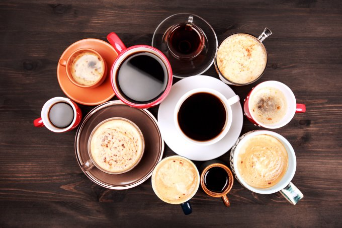

Café

Você sabia que uma rotina saudável começa com um café?
café, além de ser delicioso, faz muito bem para a saúde. O café pode ser um aliado na luta contra doenças como câncer, Alzheimer, depressão, estresse e diabetes. Além disso, essa deliciosa bebida ajuda na digestão e até rejuvenesce as células do corpo.